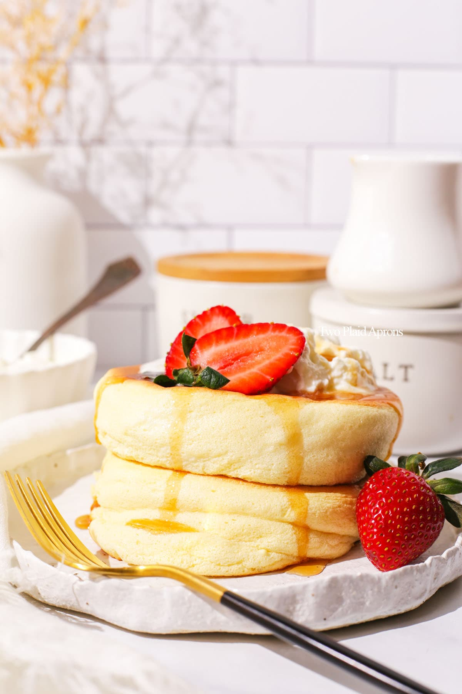

Japanese Souffle Pancakes

Japanese souffle pancakes, also known as fluffy pancakes or jiggly pancakes, are a popular and delightful breakfast or dessert item in Japan. These pancakes are known for their incredibly light and airy texture, resembling a cross between a pancake and a souffle.
These pancakes have gained popularity around the world for their unique appearance and melt-in-your-mouth texture. They are often enjoyed as a special treat or a decadent brunch item, providing a delightful and indulgent breakfast or dessert experience.
Ingredients
- 2 large eggs, separated into yolks and whites
- 3tbsp milk
- 1/2tsp vanilla
- 1/4cup ap flour
- 1/2tsp baking powder
- 2tbsp sugar
- pinch of salt
- butter or oil for greasing pan
- toppings of your choice
Steps
- In a medium-sized bowl, whisk together the egg yolks, milk, and vanilla extract until well combined.
- In a separate bowl, sift the all-purpose flour, baking powder, and a pinch of salt. Add this dry mixture to the egg yolk mixture and whisk until you have a smooth batter.
- In another clean bowl, beat the egg whites using an electric mixer or whisk until they form stiff peaks. This will take a few minutes. Make sure there are no traces of yolk in the egg whites, as even a small amount can prevent them from properly reaching stiff peaks.
- Gently fold the beaten egg whites into the batter. Use a spatula and make sure to be gentle to preserve the airiness of the egg whites. The batter should become light and fluffy.
- Preheat a non-stick pan or griddle over low to medium heat. You can use pancake molds or metal rings to shape the pancakes, or simply scoop the batter directly onto the pan. If using molds, lightly grease them with butter or oil.
- Spoon a portion of the batter onto the pan, making a circular shape about 3 to 4 inches in diameter. Keep in mind that the pancakes will rise, so don't make them too big.
- Cover the pan with a lid to trap the heat and steam. This will help the pancakes rise and cook evenly. Cook the pancakes for about 2-3 minutes on each side, or until they are golden brown and cooked through.
- Carefully remove the pancakes from the pan and stack them on a plate. You can keep them warm in a low-temperature oven while you cook the remaining pancakes.
- Serve the Japanese souffle pancakes with your choice of toppings, such as fresh fruit, whipped cream, syrup, powdered sugar, or any other desired accompaniments.